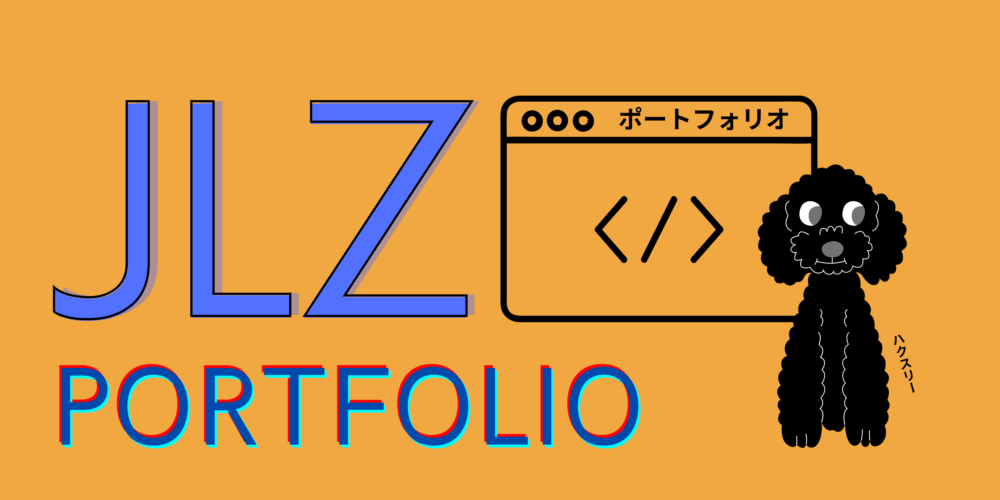

<mat-toolbar color="accent">
  <div id="logo">
    <a routerLink="/home" id="toolbar-logo" routerLinkActive="active">
      
    </a>
  </div>
  <div id="button-container">
    <button color="primary" mat-flat-button routerLink="/aboutme" routerLinkActive="active">
      About Me
    </button>
    <div class="spacer"></div>
    <button color="primary" mat-flat-button routerLink="/hobbies" routerLinkActive="active">
      Hobbies
    </button>
    <div class="spacer"></div>
    <button color="primary" mat-flat-button routerLink="/news" routerLinkActive="active">
      News
    </button>
    <div class="spacer"></div>
    <button color="primary" mat-flat-button routerLink="/socials" routerLinkActive="active">
      Socials
    </button>
    <div class="spacer"></div>
    <button mat-flat-button color="warn" (click)="logout()">LOGOUT!</button>
  </div>
  <div id="menu">
    <button mat-fab type="button" color="primary" (click)="drawer.toggle()">
      <mat-icon>
        menu
      </mat-icon>
    </button>
  </div>
</mat-toolbar>
<mat-sidenav-container autosize>
  <mat-sidenav #drawer mode="over" position="end">
    <div id="button-container-column">
      <button color="primary" mat-raised-button routerLink="/aboutme" routerLinkActive="active" extended (click)="drawer.toggle()">
        <mat-icon>person</mat-icon>
        <p>About Me</p>
      </button>
      <div class="vert-spacer"></div>
      <button color="primary" mat-raised-button routerLink="/hobbies" routerLinkActive="active" extended (click)="drawer.toggle()">
        <mat-icon>sports_handball</mat-icon>
        <p>Hobbies</p>
      </button>
      <div class="vert-spacer"></div>
      <button color="primary" mat-raised-button routerLink="/news" routerLinkActive="active" extended (click)="drawer.toggle()">
        <mat-icon>newspaper</mat-icon>
        <p>News</p>
      </button>
      <div class="vert-spacer"></div>
      <button color="primary" mat-raised-button routerLink="/socials" routerLinkActive="active" extended (click)="drawer.toggle()">
        <mat-icon>groups</mat-icon>
        <p>Socials</p>
      </button>
      <div class="vert-spacer"></div>
      <button color="primary" mat-flat-button routerLink="/contact" routerLinkActive="active" (click)="drawer.toggle()">
        <mat-icon>contact_mail</mat-icon>
        <p>Contact Me</p>
      </button>
      <div class="vert-spacer"></div>
      <div class="vert-spacer"></div>
      <button mat-raised-button color="warn" (click)="logout()" extended (click)="drawer.toggle()">
        <mat-icon>logout</mat-icon>
        <p>LOGOUT!</p>
      </button>
    </div>

  </mat-sidenav>

  <mat-sidenav-content>
    <div id="main-view">
      <router-outlet></router-outlet>
    </div>
  </mat-sidenav-content>

</mat-sidenav-container>